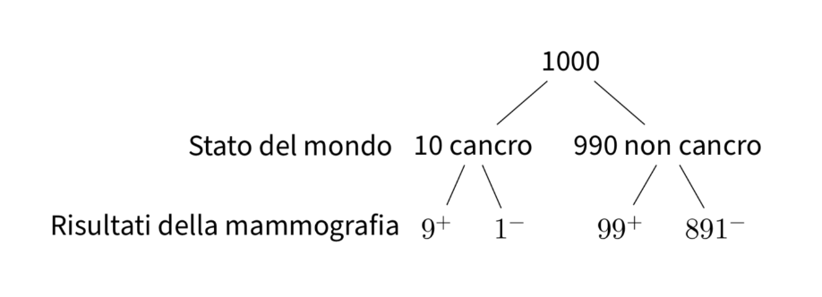

Probabilità condizionata
Contents
19. Probabilità condizionata#
Definiamo i seguenti concetti:
La probabilità congiunta è la probabilità del verificarsi simultaneo di due eventi. È importante rendersi conto che, qui, “simultaneo” significa che gli eventi fanno parte dello stesso evento, anche se i due eventi si verificano in momenti diversi. Ad esempio, potremmo essere interessati alla probabilità congiunta di estrarre una pallina rossa e una verde.
La probabilità marginale è definita come la probabilità di un singolo evento, indipendentemente da tutti gli altri eventi. Ad esempio, possiamo calcolare la probabilità marginale di estrarre una pallina verde da un’urna.
La probabilità condizionata è la probabilità di un evento dato il verificarsi di un altro evento. Se, ad esempio, estraiamo una pallina verde da un’urna, possiamo chiederci quanto è grande la probabilità di estrarre una seconda pallina verde dalla stessa urna.
In questo capitolo esamineremo la nozione di probabilità condizionata e i principali teoremi ad essa associati.
19.1. Il paradosso di Monty Hall#
Un’ottima intruduzione alla proabilità condizionata, che dovrebbe farci capire come l’acquisizione di nuove informazioni, alle volte, ci porta ad una completa rivalutazione dei termini del problema, “condizionatamente alle informazioni acquisite”, è fornita da un famoso problema di teoria della probabilità, il paradosso di Monty Hall. Il problema è legato al gioco a premi statunitense Let’s Make a Deal e prende il nome da quello del conduttore dello show, Monte Halprin, noto con lo pseudonimo di Monty Hall.
Nel gioco vengono mostrate al concorrente tre porte chiuse; dietro ad una si trova un’automobile, mentre ciascuna delle altre due nasconde una capra. Il giocatore può scegliere una delle tre porte, vincendo il premio corrispondente. Dopo che il giocatore ha selezionato una porta, ma non l’ha ancora aperta, il conduttore dello show – che conosce ciò che si trova dietro ogni porta – apre una delle altre due, rivelando una delle due capre, e offre al giocatore la possibilità di cambiare la propria scelta iniziale, passando all’unica porta restante. Il paradosso deriva dal fatto che cambiare la porta migliora le chance del giocatore di vincere l’automobile, portandole da 1/3 a 2/3. (da Wikipedia) Per convincervi di questo, vi invito a scrivere una simulazione in Python in cui vengono immaginati due scenari (ripetuti migliaia di volte): uno in cui il giocatore rimane con la sua scelta iniziale e uno in cui il giocatore cambia la propria scelta dopo che Monty Hall ha aperto una porta dietro di cui si nascondeva una capra.
19.2. Probabilità condizionata su altri eventi#
L’attribuzione di una probabilità ad un evento è sempre condizionata dalle conoscenze che abbiamo a disposizione. Per un determinato stato di conoscenze, attribuiamo ad un dato evento una certa probabilità di verificarsi; ma se il nostro stato di conoscenze cambia, allora cambierà anche la probabilità che attribuiremo all’evento in questione. Infatti, si può pensare che tutte le probabilità siano probabilità condizionate, anche se l’evento condizionante non è sempre esplicitamente menzionato. Arriviamo così alla seguente definizione.
Definizione
Siano \(A\) e \(B\) due eventi definiti sullo spazio campione \(S\). Supponiamo di sapere che l’evento \(B\) si è verificato. Si chiama probabilità condizionata di \(A\) dato \(B\) il numero
dove \(P(A\cap B)\) è la probabilità congiunta dei due eventi, ovvero la probabilità che si verifichino entrambi.
Si noti che \(P(A \mid B)\) non è definita se \(P(B) = 0\).
Possiamo pensare alla probabilità condizionata come a un cambiamento dello spazio campionario da \(S\) a \(B\). Per semplici spazi campione abbiamo dunque
Consideriamo un esempio. Sappiamo che la somma del lancio di due dadi ha prodotto un risultato dispari. Qual è la probabilità che la somma sia minore di 8?
r = range(1, 7)
sample = [(i, j) for i in r for j in r]
sample_odd = [roll for roll in sample if (sum(roll) % 2) != 0]
sample_odd
[(1, 2),
(1, 4),
(1, 6),
(2, 1),
(2, 3),
(2, 5),
(3, 2),
(3, 4),
(3, 6),
(4, 1),
(4, 3),
(4, 5),
(5, 2),
(5, 4),
(5, 6),
(6, 1),
(6, 3),
(6, 5)]
event = [roll for roll in sample_odd if sum(roll) < 8]
print(f"{len(event)} / {len(sample_odd)}")
12 / 18
Se applichiamo l’eq. (19.1), abbiamo: \(P(A \cap B)\) = 12/36, \(P(B)\) = 18/36 e
19.2.1. Mammografia e cancro al seno#
Consideriamo un altro esempio. Supponiamo che lo screening per la diagnosi precoce del tumore mammario si avvalga di un test che è accurato al 90%, nel senso che classifica correttamente il 90% delle donne colpite dal cancro e il 90% delle donne che non hanno il cancro al seno. Supponiamo che l’1% delle donne sottoposte allo screening abbia effettivamente il cancro al seno (e d’altra parte, il 99% non lo ha). Ci chiediamo: (1) qual è la probabilità che una donna scelta a caso ottenga una mammografia positiva, e (2) se la mammografia è positiva, qual è la probabilità che vi sia effettivamente un tumore al seno?
Per risolvere questo problema, supponiamo che il test in questione venga somministrato ad un grande campione di donne, diciamo a 1000 donne. Di queste 1000 donne, 10 (ovvero, l’1%) hanno il cancro al seno. Per queste 10 donne, il test darà un risultato positivo in 9 casi (ovvero, nel 90% dei casi). Per le rimanenti 990 donne che non hanno il cancro al seno, il test darà un risultato positivo in 99 casi (se la probabilità di un vero positivo è del 90%, la probabilità di un falso positivo è del 10%). Questa situazione è rappresentata nella figura seguente.
{kind=link}

Combinando i due risultati precedenti, vediamo che il test dà un risultato positivo per 9 donne che hanno effettivamente il cancro al seno e per 99 donne che non ce l’hanno, per un totale di 108 risultati positivi. Dunque, la probabilità di ottenere un risultato positivo al test è \(\frac{108}{1000}\) = 11%. Ma delle 108 donne che hanno ottenuto un risultato positivo al test, solo 9 hanno il cancro al seno. Dunque, la probabilità di essere una donna che ha veramente il cancro al seno, dato un risultato positivo al test (che ha le proprietà descritte sopra), è pari a \(\frac{9}{108}\) = 8%.
In questo esercizio, la probabilità dell’evento “ottenere un risultato positivo al test” è una probabilità non condizionata, mentre la probabilità dell’evento “avere il cancro al seno, dato che il test ha prodotto un risultato positivo” è una probabilità condizionata.
19.3. Teorema della probabilità composta#
È possibile scrivere l’eq. (19.1) nella forma:
Questo secondo modo di scrivere l’eq. (19.1) è chiamato teorema della probabilità composta (o regola moltiplicativa, o regola della catena). La legge della probabilità composta ci dice che la probabilità che si verifichino due eventi \(A\) e \(B\) è pari alla probabilità di uno dei due eventi moltiplicato con la probabilità dell’altro evento condizionato al verificarsi del primo.
L’eq. (19.2) si estende al caso di \(n\) eventi \(A_1, \dots, A_n\) nella forma seguente:
Per esempio, nel caso di quattro eventi abbiamo
Per fare un esempio, consideriamo il problema seguente. Da un’urna contenente 6 palline bianche e 4 nere si estrae una pallina per volta, senza reintrodurla nell’urna. Indichiamo con \(B_i\) l’evento: “esce una pallina bianca alla \(i\)-esima estrazione” e con \(N_i\) l’estrazione di una pallina nera. L’evento: “escono due palline bianche nelle prime due estrazioni” è rappresentato dalla intersezione \(\{B_1 \cap B_2\}\) e, per l’eq. (19.2), la sua probabilità vale
\(P(B_1)\) vale 6/10, perché nella prima estrazione \(\Omega\) è costituito da 10 elementi: 6 palline bianche e 4 nere. La probabilità condizionata \(P(B_2 \mid B_1)\) vale 5/9, perché nella seconda estrazione, se è verificato l’evento \(B_1\), lo spazio campionario consiste di 5 palline bianche e 4 nere. Si ricava pertanto:
In modo analogo si ha che
Se l’esperimento consiste nell’estrazione successiva di 3 palline, la probabilità che queste siano tutte bianche, per l’eq. (19.3), vale
dove la probabilità \(P(B_3 \mid B_1 \cap B_2)\) si calcola supponendo che si sia verificato l’evento condizionante \(\{B_1 \cap B_2\}\). Lo spazio campionario per questa probabilità condizionata è costituito da 4 palline bianche e 4 nere, per cui \(P(B_3 \mid B_1 \cap B_2) = 1/2\) e quindi:
La probabilità dell’estrazione di tre palline nere è invece:
19.4. Il teorema della probabilità totale#
Il teorema della probabilità totale (detto anche teorema delle partizioni) consente di calcolare la probabilità di un evento \(E\) di cui sono note le probabilità condizionate rispetto ad altri eventi \((H_i)_{i\geq 1}\), a condizione che essi costituiscano una partizione dell’evento certo \(\Omega\).
Il caso più semplice è quello di una partizione dello spazio campione in due sottoinsiemi:

In tali circostanza abbiamo che
Nella sua forma generale, il risultato che abbiamo ottenuto può essere espresso nel modo seguente.
Teorema
Sia
\(\bigcup_{i=1}^\infty H_i = \Omega\);
\(H_j \cap H_j = \emptyset, i\neq j\);
\(P(H_i) > 0, i = 1, \dots, \infty\).
Per qualunque evento \(E\) definito in \(\Omega\), abbiamo che
L’eq. (19.4) è utile per calcolare \(P(E)\), se \(P(E \mid H_i)\) e \(P(H_i)\) sono facili da trovare. Quale esempio, consideriamo il seguente problema. Abbiamo tre urne, ciascuna delle quali contiene 100 palline:
Urna 1: 75 palline rosse e 25 palline blu,
Urna 2: 60 palline rosse e 40 palline blu,
Urna 3: 45 palline rosse e 55 palline blu.
Una pallina viene estratta a caso da un’urna anch’essa scelta a caso. Qual è la probabilità che la pallina estratta sia di colore rosso?
Sia \(R\) l’evento “la pallina estratta è rossa” e sia \(U_i\) l’evento che corrisponde alla scelta dell’\(i\)-esima urna. Sappiamo che
Gli eventi \(U_1\), \(U_2\) e \(U_3\) costituiscono una partizione dello spazio campione in quanto \(U_1\), \(U_2\) e \(U_3\) sono eventi mutualmente esclusivi ed esaustivi, ovvero \(P(U_1 \cup U_2 \cup U_3) = 1.0\). In base al teorema della probabilità totale, la probabilità di estrarre una pallina rossa è dunque
19.5. L’indipendendenza stocastica#
Un concetto molto importante per le applicazioni statistiche della probabilità è quello dell’indipendenza stocastica. L’eq. (19.1) consente di esprimere il concetto di indipendenza di un evento da un altro in forma intuitiva: se \(A\) e \(B\) sono eventi indipendenti, allora il verificarsi di \(A\) non influisce sulla probabilità del verificarsi di \(B\), ovvero non la condiziona, e il verificarsi di \(B\) non influisce sulla probabilità del verificarsi di \(A\). Infatti, per l’eq. (19.1), si ha che, se \(A\) e \(B\) sono due eventi indipendenti, risulta:
Possiamo dunque dire che due eventi \(A\) e \(B\) sono indipendenti se
Tre eventi, \(A\), \(B\) e \(C\) sono indipendenti se venongno soddisfatte le seguenti condizioni:
Se solo le prime tre condizioni vengono soddisfatte, allora gli eventi si dicono indipendenti a due a due.
Consideriamo il seguente problema. Nel lancio di due dadi non truccati, si considerino gli eventi: \(A\) = “esce un 1 o un 2 nel primo lancio” e \(B\) = “il punteggio totale è 8”. Gli eventi \(A\) e \(B\) sono indipendenti?
Calcoliamo \(P(A)\):
r = range(1, 7)
sample = [(i, j) for i in r for j in r]
A = [roll for roll in sample if roll[0] == 1 or roll[0] == 2]
print(f"{len(A)} / {len(sample)}")
12 / 36
Calcoliamo \(P(B)\):
B = [roll for roll in sample if roll[0] + roll[1] == 8]
print(f"{len(B)} / {len(sample)}")
5 / 36
Calcoliamo \(P(A \cap B)\):
I = [
roll
for roll in sample
if (roll[0] == 1 or roll[0] == 2) and (roll[0] + roll[1] == 8)
]
print(f"{len(I)} / {len(sample)}")
1 / 36
Gli eventi \(A\) e \(B\) non sono statisticamente indipendenti dato che \(P(A \cap B) \neq P(A)P(B)\):
12/36 * 5/36 == 1/36
False
19.6. Esercizio di ricapitolazione con Python#
Seguendo l’approccio di Downey [Dow21], per promuovere una comprensione più intuitiva delle leggi della probabilità che abbiamo descritto finora, utilizzeremo ora una semplice definizione di probabilità, adeguata per il presente esercizio, ovvero considereremo la probabilità come la proporzione di un insieme finito.
Esaminiamo qui il dataset penguins come un insieme finito sul quale definire di vari eventi. Iniziamo ad importare i dati ed escludiamo i dati mancanti.
import pandas as pd
df = pd.read_csv('data/penguins.csv')
df.dropna(inplace=True)
df.info()
<class 'pandas.core.frame.DataFrame'>
Int64Index: 333 entries, 0 to 343
Data columns (total 8 columns):
# Column Non-Null Count Dtype
--- ------ -------------- -----
0 species 333 non-null object
1 island 333 non-null object
2 bill_length_mm 333 non-null float64
3 bill_depth_mm 333 non-null float64
4 flipper_length_mm 333 non-null float64
5 body_mass_g 333 non-null float64
6 sex 333 non-null object
7 year 333 non-null int64
dtypes: float64(4), int64(1), object(3)
memory usage: 23.4+ KB
L’istruzione seguente ritorna un oggetto Pandas Series booleano che è True se il pinguino vive sull’isola Dream.
on_dream = df['island'] == "Dream"
on_dream.head()
0 False
1 False
2 False
4 False
5 False
Name: island, dtype: bool
In totale ci sono 123 pinguini sull’isola Dream.
on_dream.sum()
123
La proporzione di pinguini sull’isola Dream, sul totale di 333 pinguini, si trova facendo la media dei valori 0 e 1 della Series precedente.
on_dream.mean()
0.36936936936936937
Circa il 36.9% di tutti i pinguini considerati vive sull’isola Dream. Quindi, se scegliamo un pinguino a caso da questo insieme, la probabilità che viva sull’isola Dream è 0.369.
Possiamo inserire il codice precedente in una funzione che ritorna la probabilità, se riceve in input una Series di valori booleani.
def prob(A):
"""Computes the probability of a proposition, A."""
return A.mean()
Verifichiamo.
prob(on_dream)
0.36936936936936937
Troviamo ora la probabilità che un pinguino sia di genere femminile.
female = df["sex"] == "female"
prob(female)
0.4954954954954955
19.6.1. Intersezione di eventi (congiunzione)#
L’intersezione tra insiemi corrisponde all’operazione logica della congiunzione. Date due proposizioni \(p\) e \(q\), la loro congiunzione è vera solo se entrambe sono vere. Se abbiamo due oggetti Series booleani, possiamo usare l’operatore & per trovare la loro congiunzione.
Defininiamo ora un nuovo evento, “small”, che identifica i pinguini la cui massa corporea è inferiore al quantile di ordine 1/3.
small = df["body_mass_g"] < df["body_mass_g"].quantile(1/3)
prob(small)
0.30930930930930933
Troviamo ora la probabilità che un pinguino sia di genere femminile e, insieme, appartenga alla categoria “small”.
prob(female & small)
0.2552552552552553
Come ci possiamo aspettare la probabilità dell’intersezione è minore della probabilità di “small” dato che non tutti i pinguini più piccoli sono di genere femminile.
19.6.2. Probabilità condizionata#
Abbiamo visto che la probabilità condizionata è la probabilità calcolata su un insieme ristretto. Per selezionare un sottoinsieme usiamo la notazione delle parentesi quadre. Nell’istruzione seguente selezioniamo solo i pinguini di genere femminile tra quelli che sono “small”.
selected = female[small]
prob(selected)
0.8252427184466019
Scriviamo ora una funzione a cui vengono passati due oggetti Series booleani, proposition e given. La funzione ritorna la probabilità di proposition condizionato a given.
def conditional(proposition, given):
return prob(proposition[given])
Troviamo ora la probabilità condizionata di essere di genere femminile, se consideriamo solo i pinguini “small”.
conditional(female, given=small)
0.8252427184466019
Troviamo ora la probabilità di essere di genere femminile, se consideriamo solo i pinguini sull’isola Dream, \(P(\text{female} \mid \text{Dream})\).
conditional(female, given=on_dream)
0.4959349593495935
Lo stesso risultato si ottiene applicando la definizione di probabilità condizionata.
prob(female & on_dream) / prob(on_dream)
0.49593495934959353
Troviamo la probabilità che, estreanod un pinguio a caso, troviamo un pinguino di genere femminile che vive sull’isola Dream.
prob(female & on_dream)
0.1831831831831832
Lo stesso risultato si trova usando la probabilità condizionata per trovare la probabilità dell’intersezione tra due eventi.
conditional(female, given=on_dream) * prob(on_dream)
0.18318318318318316
19.6.3. Teorema di Bayes#
conditional(female, given=on_dream)
0.4959349593495935
conditional(on_dream, given=female) * prob(female) / prob(on_dream)
0.49593495934959353
19.7. Commenti e considerazioni finali#
La probabilità condizionata è importante perché ci fornisce uno strumento per precisare il concetto di indipendenza statistica. Una delle domande più importanti delle analisi statistiche è infatti quella che si chiede se due variabili siano associate tra loro oppure no. In questo capitolo abbiamo discusso il concetto di indipendenza (come contrapposto al concetto di associazione); in seguito vedremo come sia possibile fare inferenza sull’associazione tra variabili.